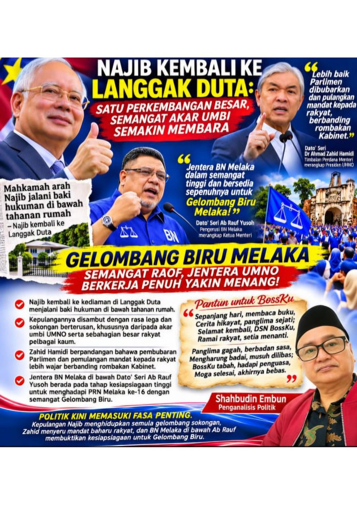

NAJIB KEMBALI KE LANGGAK DUTA: SATU PERKEMBANGAN BESAR, SEMANGAT AKAR UMBI DAN GELORA POLITIK MENJELANG PRN MELAKA
Gelombang Biru, jentera UMNO dan persoalan mandat baharu rakyat
Kepulangan bekas Perdana Menteri, Dato' Seri Najib Tun Razak ke kediamannya di Langgak Duta pada 10 November 2026 merupakan satu perkembangan besar yang mendapat perhatian masyarakat serta landskap politik negara.
Mahkamah Tinggi Kuala Lumpur telah mengeluarkan perintah yang membolehkan beliau menjalani baki hukuman bagi kes SRC International melalui kaedah tahanan rumah. Perintah tersebut menetapkan tempoh berkenaan sehingga 23 Ogos 2028, sebelum beliau kembali menjalani hukuman berkaitan kes 1MDB mengikut perintah yang berkuat kuasa.
Perkembangan ini bukan bermaksud Najib telah dibebaskan sepenuhnya daripada hukuman. Sebaliknya, ia merupakan pelaksanaan kaedah menjalani baki hukuman berdasarkan perintah mahkamah dan pengampunan bersyarat yang berkaitan.
Namun, dari sudut sentimen masyarakat, kepulangannya ke Langgak Duta telah mencetuskan pelbagai reaksi. Ada yang melihatnya sebagai perkembangan yang melegakan, khususnya dalam kalangan penyokong setia beliau, manakala sebahagian masyarakat lain terus menekankan kepentingan prinsip keadilan, akauntabiliti dan kedaulatan undang-undang.
BOSS KU: SOKONGAN AKAR UMBI YANG MASIH MENJADI PERHATIAN
Satu perkara yang tidak boleh dipandang ringan ialah kedudukan Najib dalam ingatan politik sebahagian besar penyokong UMNO.
Sepanjang tempoh beliau berada dalam tahanan, nama Najib tidak pernah benar-benar hilang daripada perbualan politik. Gelaran popular 'Bossku' terus digunakan oleh penyokongnya, khususnya dalam kalangan akar umbi yang mengaitkan kepimpinan beliau dengan pengalaman pentadbiran terdahulu.
Saya melihat bahawa sokongan terhadap Najib masih mempunyai ruang yang ketara dalam kalangan sebahagian ahli UMNO di peringkat akar umbi. Malah, simpati terhadap beliau turut dapat dilihat dalam kalangan sebahagian masyarakat bukan Melayu.
Bagaimanapun, sokongan politik tidak wajar diukur hanya melalui sorakan, hantaran media sosial atau kehadiran penyokong di sesuatu lokasi. Ia perlu dinilai melalui kajian yang telus, pandangan masyarakat yang lebih luas serta perkembangan politik sebenar.
Hakikatnya, kepulangan Najib membuka semula perbincangan tentang hubungan antara undang-undang, pengampunan diraja, keadilan dan persepsi rakyat terhadap kepimpinan negara.
Politik boleh berubah, tetapi memori rakyat terhadap seseorang pemimpin tidak semestinya terpadam begitu sahaja.
ZAHID HAMIDI: MANDAT RAKYAT LEBIH BESAR DARIPADA ROMBAKAN KABINET
Dalam perkembangan yang sama, kenyataan Timbalan Perdana Menteri merangkap Presiden UMNO, Dato' Seri Dr Ahmad Zahid Hamidi, turut menarik perhatian.
Ketika ditanya mengenai kemungkinan rombakan Kabinet, Zahid menyatakan bahawa beliau tidak melihat keperluan segera untuk melaksanakannya pada ketika ini.
Sebaliknya, beliau berpandangan bahawa adalah lebih baik Parlimen dibubarkan, mandat dikembalikan kepada rakyat dan sebuah kerajaan baharu dibentuk selepas pilihan raya.
Kenyataan ini membawa satu persoalan politik yang besar.
Adakah rombakan Kabinet mampu menyelesaikan segala persoalan politik dan pentadbiran yang sedang dihadapi negara? Atau adakah sudah tiba masanya mandat rakyat diperbaharui melalui proses pilihan raya?
Pandangan Zahid itu perlu dilihat dalam konteks tanggungjawab kerajaan terhadap kestabilan pentadbiran dan keyakinan rakyat.
Rombakan Kabinet merupakan prerogatif Perdana Menteri, manakala pembubaran Parlimen pula tertakluk kepada proses dan peruntukan Perlembagaan Persekutuan, termasuk peranan Yang di-Pertuan Agong.
Apa yang lebih penting, sebarang keputusan hendaklah mengambil kira kepentingan negara, kestabilan ekonomi dan mandat demokrasi rakyat.
MELAKA: JENTERA BN, AB RAUF DAN SEMANGAT GELOMBANG BIRU
Dalam perkembangan politik Melaka pula, perhatian kini tertumpu kepada persediaan Barisan Nasional menghadapi PRN Melaka ke-16.
Dato' Seri Ab Rauf Yusoh selaku Pengerusi BN Melaka dilihat memberi perhatian kepada kesiapsiagaan jentera parti, penyelarasan gerak kerja serta usaha memperkukuh kekuatan organisasi menjelang hari pengundian.
Laporan media pada 11 November turut memaparkan usaha kepimpinan BN Melaka mengenal pasti kelemahan kempen, memperkemas persediaan dan memastikan jentera parti berada dalam keadaan bersedia.
Semangat yang dibawa melalui slogan dan gerakan Gelombang Biru kini menjadi sebahagian daripada naratif politik BN di Melaka.
Namun, semangat sahaja tidak mencukupi.
Jentera parti perlu bekerja dengan tersusun, mendengar keluhan masyarakat, memahami keperluan generasi muda, menyantuni pengundi wanita serta memberikan perhatian kepada isu ekonomi, pekerjaan, perumahan, pendidikan dan kos sara hidup.
Kerjasama antara komponen parti juga memerlukan disiplin, kesepakatan dan penghormatan terhadap peranan setiap pihak.
Apa yang menarik, Dato' Seri Ab Rauf turut menekankan konsep winning mentality. Dalam politik, konsep ini bukan sekadar keyakinan untuk menang, tetapi kesediaan memperbaiki kelemahan dan memastikan setiap jentera memahami tanggungjawab masing-masing.
Gelombang Biru hanya akan mempunyai makna sekiranya diterjemahkan kepada khidmat, kepercayaan dan prestasi yang dapat dirasai rakyat.
PANTUN KHAS YB DATO' SERI DR AHMAD MASLAN: SELAMAT KEMBALI BOSSKU
Menarik perhatian saya ialah pantun yang ditulis oleh YB Dato' Seri Dr Ahmad Maslan sempena kepulangan Dato' Seri Najib Tun Razak ke kediamannya di Langgak Duta.
Pantun tersebut membawa mesej penghargaan, kesetiaan dan harapan yang cukup mendalam daripada seorang sahabat politik terhadap seorang pemimpin yang pernah menerajui negara.
Sepanjang hari, membaca buku,
Cerita hikayat, panglima sejati;
Selamat kembali, DSN BossKu,
Ramai rakyat, setia menanti.
Panglima gagah, berbadan sasa,
Mengharung badai, musuh dilibas;
BossKu tabah, hadapi penguasa,
Moga selesai, akhirnya bebas.
Pantun hasil nukilan YB Dato' Seri Dr Ahmad Maslan ini bukan sekadar susunan kata yang indah, tetapi turut menggambarkan sentimen dan emosi politik dalam kalangan mereka yang mengikuti perjalanan Dato' Seri Najib.
Dalam politik, sejarah kepimpinan, persahabatan dan hubungan dengan akar umbi sering meninggalkan kesan yang panjang. Namun, semua pandangan dan harapan wajar disampaikan dengan menghormati undang-undang serta proses kehakiman negara.
PENUTUP: POLITIK MEMERLUKAN KEBIJAKSANAAN, BUKAN SEKADAR SORAKAN
Tiga perkembangan ini — kepulangan Najib ke Langgak Duta, pandangan Zahid mengenai mandat baharu dan persediaan BN menghadapi PRN Melaka — memberikan gambaran tentang landskap politik negara yang sedang melalui satu fasa penting.
Najib mempunyai penyokong yang masih mengikuti perkembangan beliau. Zahid pula telah menyuarakan pandangan mengenai keperluan mendapatkan mandat baharu berbanding sekadar melakukan rombakan Kabinet. Di Melaka, Ab Rauf dan kepimpinan BN sedang berhadapan tanggungjawab memperkemas organisasi serta membuktikan keupayaan mereka di hadapan pengundi.
Persoalan akhirnya bukan sekadar siapa yang paling lantang bersorak atau siapa yang mempunyai slogan paling menarik.
Persoalannya ialah siapa yang mampu memahami kehendak rakyat, menghormati undang-undang, memperkukuh institusi dan menawarkan pentadbiran yang memberikan manfaat kepada semua lapisan masyarakat.
Gelombang politik boleh datang dan pergi. Namun, kepercayaan rakyat tidak boleh dibina melalui nostalgia semata-mata. Ia mesti diperoleh melalui khidmat, integriti, kebijaksanaan dan tanggungjawab.
Itulah ukuran sebenar kematangan sesebuah perjuangan politik.
Shahbudin Embun
Penganalisis Politik